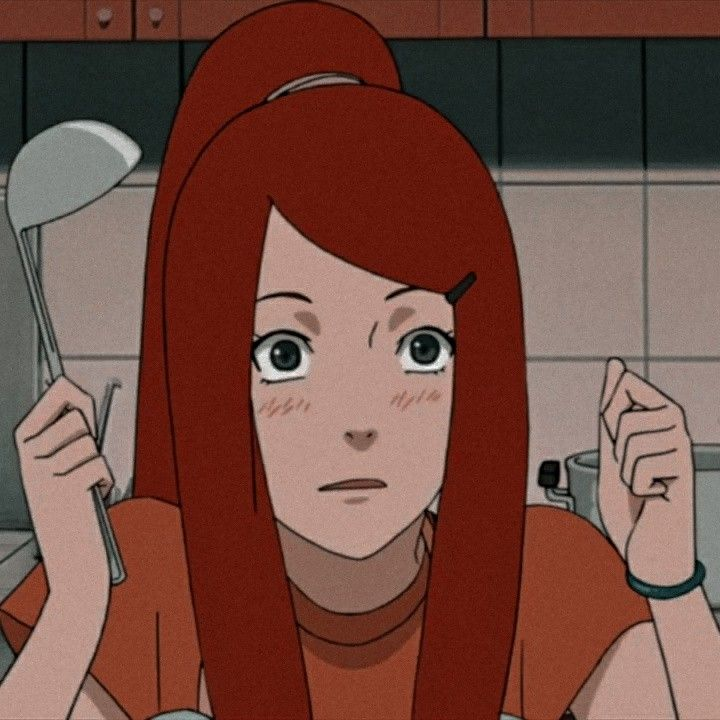

Naruto's Mom
by someone
Kushina Namikaze (née Uzumaki) was one of the main supporting characters of the Naruto series, as well as a powerful kunoichi who was the wife of Minato Namikaze and the mother of Naruto Uzumaki. She was also the second Jinchuuriki of Kurama, the Nine-Tailed Fox.
Kushina Namikaze (née Uzumaki) was one of the main supporting characters of the Naruto series, as well as a powerful kunoichi who was the wife of Minato Namikaze and the mother of Naruto Uzumaki. She was also the second Jinchuuriki of Kurama, the Nine-Tailed Fox.